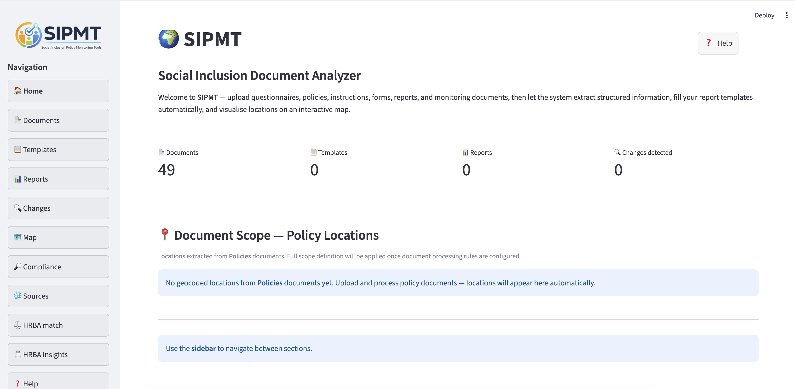

Напредна семантичка анализа докумената социјалне инклузије. Екстракција података, ГИС визуелизација и HRBA мониторинг заснован на вештачкој интелигенцији.

Кратак презентациони видео о SIPMT платформи. Можете га преузети локално за каснији преглед.
Ово је велики видео фајл — прегледајте га након преузимања.
Преузми видеоАрхитектура и SIPMT модули
Ингестија PDF, DOCX и XLSX формата. Аутоматизован OCR систем и пун Audit Trail преглед.
Интелигентно скенирање индикатора користећи spaCy NLP и локалне Ollama LLM моделе.
Аутоматска екстракција гео-локација из текста и интерактивни Folium приказ.
Надзор над PostgreSQL базом, подешавање векторских индекса и GPU ресурса.
Управљање сетовима података уз стриктну контролу права приступа (Multi-tenant).
Ово је кратак водич који покрива главне корисничке токове. За интерактивну употребу кликните ПОКРЕНИ СИСТЕМ.
Напредне напомене
За LLM режим, уверите се да је локални Ollama сервер доступан и да је модел учитан. Конфигурација се налази у `config.py`.
Централа
Краљице Наталије 45, 11000 Београд, Србија
Е-пошта
office@idn.org.rs